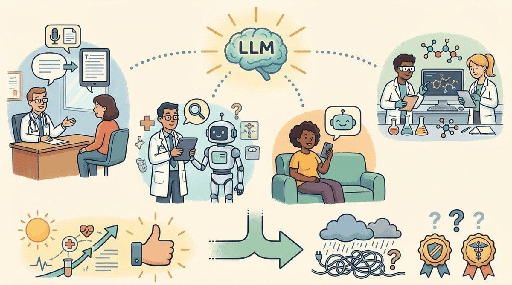

"Healthcare LLMs are graded on lives, not on tokens."
Sage, Clinically-Cautious AI Agent
Chapters 67 and 73 covered legal and finance. This chapter is healthcare: clinical decision support, biomedical literature, EHR drafting, medical imaging assistance, drug discovery, and the regulatory, privacy, and safety requirements that domain demands.
Healthcare combines the most extreme upside (clinician burnout is a public-health crisis; LLM ambient documentation is the most consistently valuable LLM application across the entire economy) with the most extreme regulatory friction (FDA, HIPAA, malpractice exposure, professional licensure). 2026 settled some of the highest-leverage use cases; many others are still in pilot. This chapter is the practitioner snapshot. Section 69.1 walks through the six use-case categories that have stabilized. Section 69.2 catalogs the failure modes specific to clinical contexts. Section 69.3 covers FDA SaMD, HIPAA, EU AI Act, and the broader regulatory framework. Section 69.4 walks through the four HIPAA-compliant deployment patterns. Section 69.5 closes with the vendor landscape, and Section 69.6 is the longer production-pattern companion.
Chapter Overview
Healthcare LLM deployment is the chapter where regulatory, ethical, and clinical-safety considerations all converge. This chapter walks the use cases that actually work (ambient documentation, clinical decision support, patient triage, medical coding, literature synthesis, drug discovery), the failure modes specific to healthcare (confident wrong answers, demographic bias, privacy leakage), the regulatory framework (FDA SaMD, HIPAA, EU AI Act, state licensure, CHAI assurance standards), the HIPAA-compliant deployment patterns (BAA-covered cloud, de-identified, VPC-isolated, on-premises open-weight), and the vendor landscape plus canonical sources.
Healthcare is the industry where a hallucination can harm a patient. This chapter teaches what works, what hurts, and what FDA and HIPAA actually require.
- Map the healthcare use cases (ambient documentation, CDS, triage, coding, drug discovery) that actually work.
- Diagnose confident wrong answers, demographic bias, and privacy leakage in healthcare LLMs.
- Apply FDA SaMD, HIPAA, EU AI Act, and CHAI assurance standards to a healthcare deployment.
- Architect a HIPAA-compliant LLM deployment across BAA-covered cloud, de-identified, VPC-isolated, and on-premises patterns.
- Evaluate healthcare LLM vendors (Abridge, Suki, Dragon Copilot, Glass Health, Hippocratic AI) against clinical fit.
Sections in This Chapter
Prerequisites
- RAG fundamentals from Chapter 32
- Privacy and data protection from Chapter 50
- Regulation and compliance from Chapter 53
- 69.1 Use Cases That Actually Work in Healthcare Ambient documentation, clinical decision support, patient triage, medical coding, literature synthesis, and drug discovery.
- 69.2 Failure Modes Specific to Healthcare Confident wrong answers, demographic bias, privacy leakage, and the mitigations that make HIPAA-compliant deployment possible.
- 69.3 Regulatory Framework for Healthcare LLMs FDA SaMD, HIPAA, EU AI Act, state licensure, CHAI assurance standards, and malpractice-insurance considerations.
- 69.4 HIPAA-Compliant Deployment Patterns BAA-covered cloud, de-identified-then-cloud, VPC-isolated, and on-premises open-weight, with their trade-offs.
- 69.5 Healthcare LLM Vendors and Further Reading Abridge, Suki, Dragon Copilot, Glass Health, Hippocratic AI, Epic, and the canonical sources.
What Comes Next
Healthcare produced the BAA-covered architecture and the ambient-documentation pattern that have become the highest-leverage LLM deployment across any industry. Chapter 70 turns to education, where the regulatory friction is different (FERPA, COPPA, accreditation) and the dominant use case (the Socratic tutor) requires a distinct architectural posture.